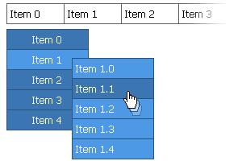

| CONTEXT HELP |
|---|
| Unlimited number of menus on the page |
|
 Any number of menus configured independently or sharing some configuration files can be safely placed on the same page. Each menu instance is separate JavaScript object with it's own index so menus don't mix their actions or interfere in any other way. |